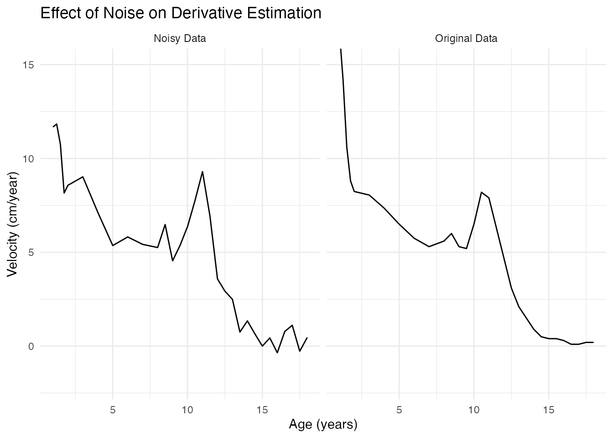
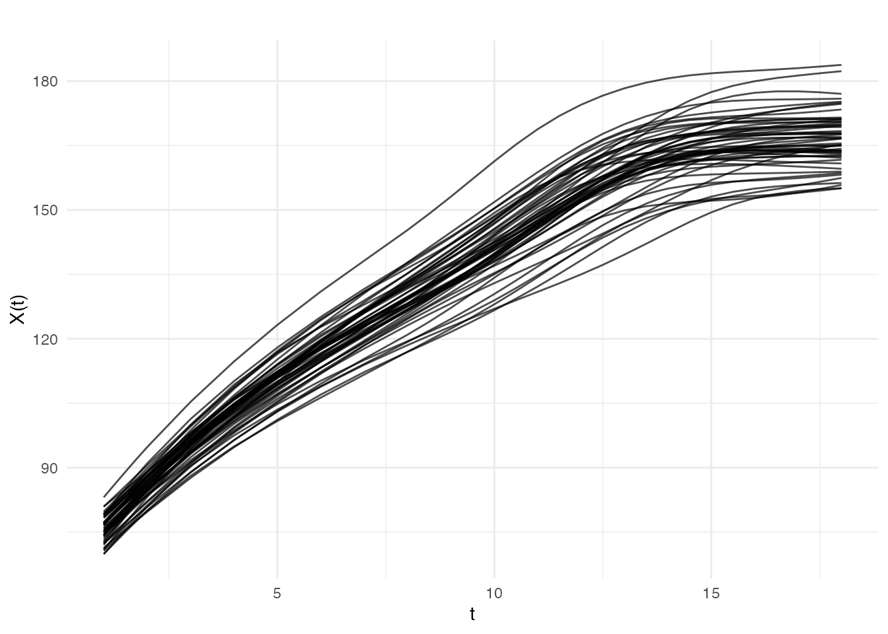
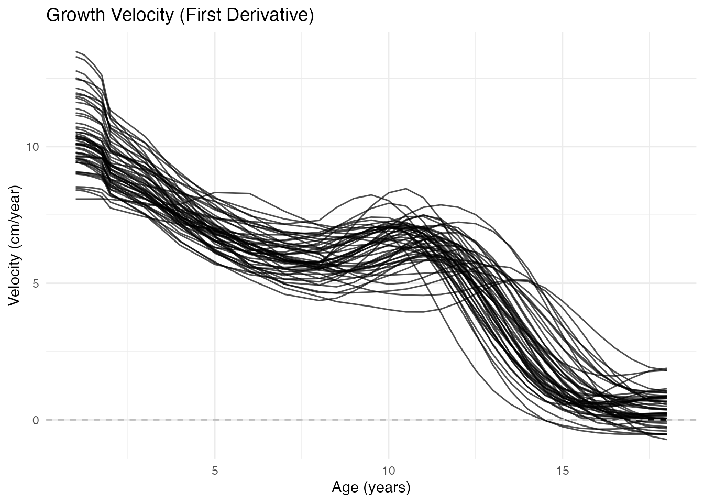
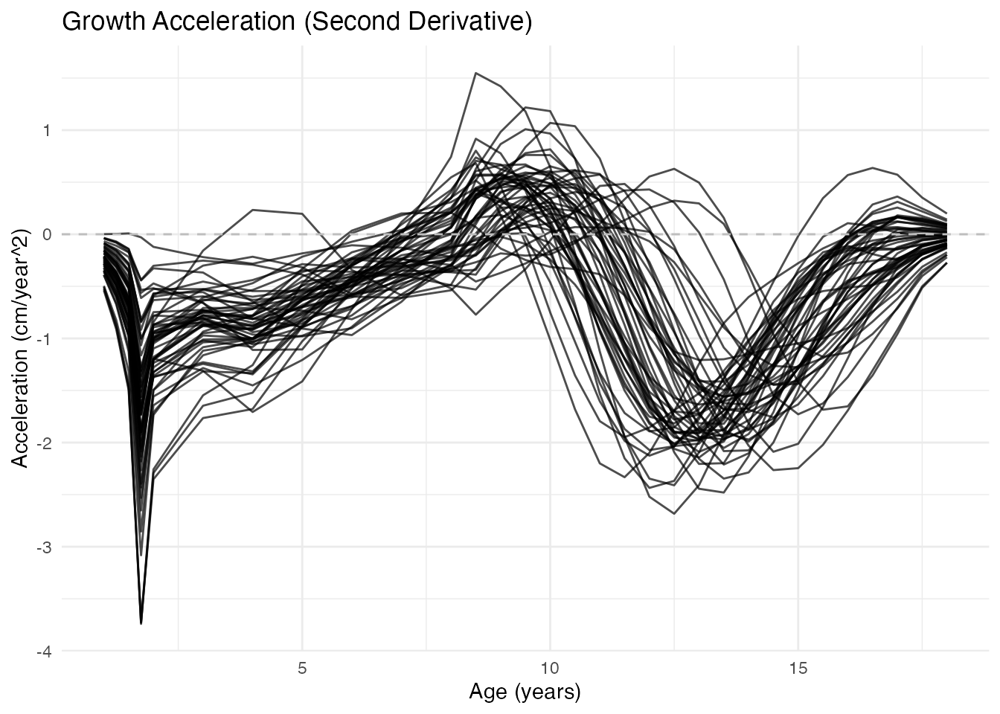
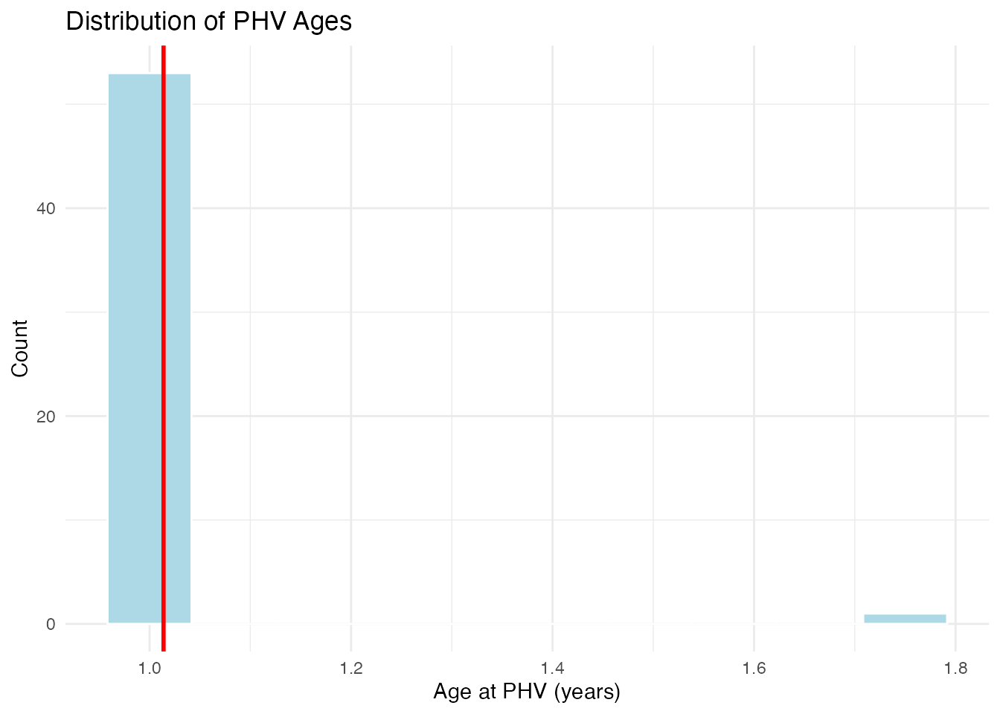
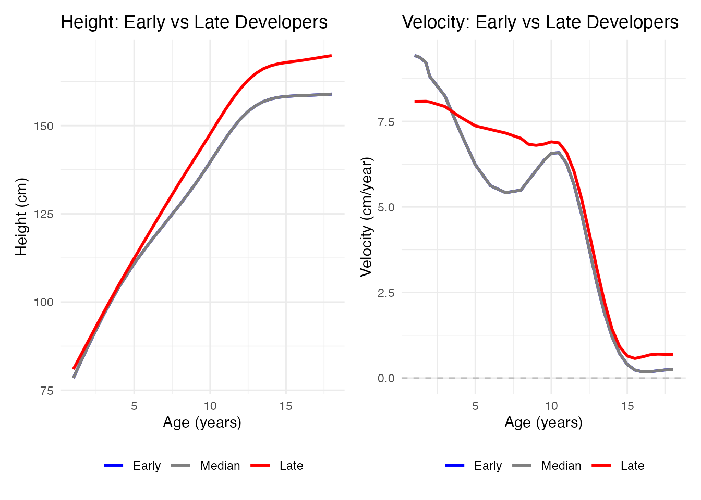
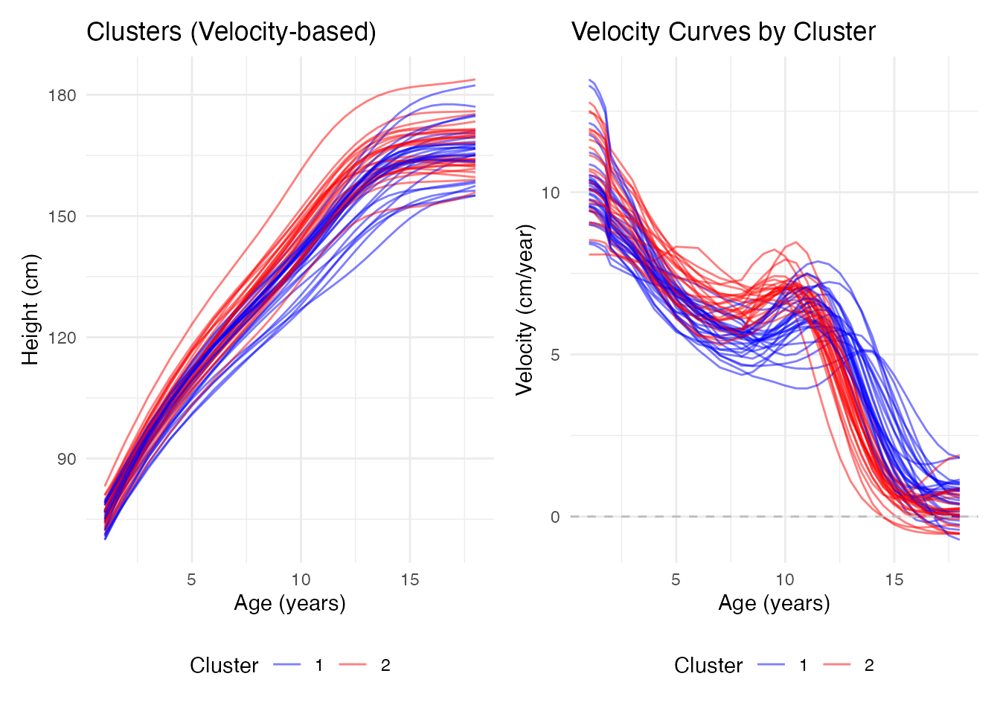
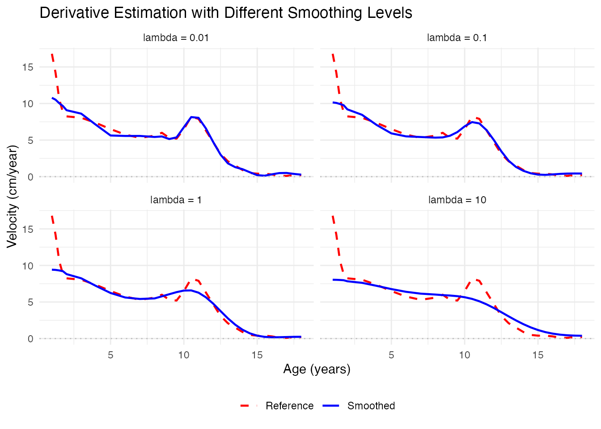

Working with Derivatives
Source:vignettes/working-with-derivatives.Rmd
working-with-derivatives.RmdWhy Derivatives Matter in FDA
In functional data analysis, derivatives reveal critical information that the original curves may hide:
- Velocity: First derivative shows rate of change
- Acceleration: Second derivative shows how the rate itself changes
- Curvature: Related to second derivative, shows bending of curves
- Phase variation: Timing of events (peaks, valleys) across subjects
Many real-world questions are about when and how fast things change, not just what values are observed.
Loading Growth Data
The Berkeley Growth Study is ideal for demonstrating derivatives: - Height curves show overall growth pattern - Velocity (1st derivative) reveals growth spurts - Acceleration (2nd derivative) shows onset and end of spurts
# Load or simulate growth data
if (requireNamespace("fda", quietly = TRUE)) {
data(growth, package = "fda")
age <- growth$age
heights <- t(growth$hgtf) # Girls' heights
n <- nrow(heights)
} else {
message("Install 'fda' package for real data: install.packages('fda')")
# Simulate realistic growth-like data with variable PHV timing
# Using logistic model where inflection point = PHV age
age <- seq(1, 18, length.out = 31)
n <- 20
heights <- matrix(0, n, length(age))
for (i in 1:n) {
final_height <- rnorm(1, 165, 5) # Adult height (cm)
init_height <- rnorm(1, 75, 2) # Height at age 1 (cm)
phv_age <- rnorm(1, 11.5, 1) # Age at PHV (early ~10, late ~13)
growth_rate <- rnorm(1, 0.45, 0.05) # Growth curve steepness
# Logistic growth: h(t) = init + (final - init) / (1 + exp(-k*(t - phv)))
# PHV occurs at inflection point (t = phv_age)
heights[i, ] <- init_height + (final_height - init_height) /
(1 + exp(-growth_rate * (age - phv_age)))
heights[i, ] <- heights[i, ] + rnorm(length(age), sd = 0.5)
}
}
fd <- fdata(heights, argvals = age)
cat("Loaded", n, "growth curves from ages", min(age), "to", max(age), "\n")
#> Loaded 54 growth curves from ages 1 to 18The Problem: Noise Amplifies with Differentiation
Let’s see what happens when we naively differentiate noisy data:
# Add some measurement noise
heights_noisy <- heights + matrix(rnorm(length(heights), sd = 1), nrow = n)
fd_noisy <- fdata(heights_noisy, argvals = age)
# Compute derivative of noisy data
fd_deriv_noisy <- deriv(fd_noisy, nderiv = 1)
# Compare to original derivative
fd_deriv <- deriv(fd, nderiv = 1)
# Plot using ggplot2
df_deriv <- data.frame(
age = rep(fd_deriv$argvals, 2),
velocity = c(fd_deriv$data[1, ], fd_deriv_noisy$data[1, ]),
type = rep(c("Original Data", "Noisy Data"), each = length(fd_deriv$argvals))
)
ggplot(df_deriv, aes(x = age, y = velocity)) +
geom_line() +
facet_wrap(~ type) +
coord_cartesian(ylim = c(-2, 15)) +
labs(x = "Age (years)", y = "Velocity (cm/year)",
title = "Effect of Noise on Derivative Estimation") +
theme_minimal() The noise in measurements becomes dramatically amplified in derivatives!
Solution: Smooth Before Differentiating
The key insight: Always smooth your data before computing derivatives.
P-splines are excellent for this because they provide smooth derivatives:
Understanding Growth Derivatives
Height Curves (Original)
plot(fd_smooth$fdata, main = "Smoothed Height Curves",
xlab = "Age (years)", ylab = "Height (cm)")
Velocity Curves (First Derivative)
Velocity shows the growth rate in cm/year. The pubertal growth spurt is clearly visible as a peak around age 11-13:
library(ggplot2)
plot(fd_velocity) +
geom_hline(yintercept = 0, linetype = 2, color = "gray") +
labs(title = "Growth Velocity (First Derivative)",
x = "Age (years)", y = "Velocity (cm/year)")
Key observations: - Infancy: Very high velocity (children grow fast) - Childhood: Gradual decline to ~5 cm/year - Puberty: Sharp peak (the growth spurt) - Adulthood: Velocity approaches zero (growth stops)
Acceleration Curves (Second Derivative)
Acceleration shows when growth speeds up (positive) or slows down (negative):
plot(fd_acceleration) +
geom_hline(yintercept = 0, linetype = 2, color = "gray") +
labs(title = "Growth Acceleration (Second Derivative)",
x = "Age (years)", y = "Acceleration (cm/year^2)")
Key observations: - Zero crossing (positive to negative): Peak of growth spurt (PHV - Peak Height Velocity) - Minimum acceleration: Most rapid deceleration of growth
Finding Important Events
Peak Height Velocity (PHV)
The age of peak height velocity is an important biological marker:
# Find age of maximum velocity for each individual
phv_ages <- apply(fd_velocity$data, 1, function(v) {
age[which.max(v)]
})
# Summary statistics
cat("Peak Height Velocity Ages:\n")
#> Peak Height Velocity Ages:
cat(" Mean:", round(mean(phv_ages), 1), "years\n")
#> Mean: 1 years
cat(" SD:", round(sd(phv_ages), 1), "years\n")
#> SD: 0.1 years
cat(" Range:", round(min(phv_ages), 1), "-", round(max(phv_ages), 1), "years\n")
#> Range: 1 - 1.8 years
# Histogram using ggplot2
df_phv <- data.frame(phv_age = phv_ages)
ggplot(df_phv, aes(x = phv_age)) +
geom_histogram(bins = 10, fill = "lightblue", color = "white") +
geom_vline(xintercept = mean(phv_ages), color = "red", linewidth = 1) +
labs(x = "Age at PHV (years)", y = "Count",
title = "Distribution of PHV Ages") +
theme_minimal()
Visualizing Individual Variation
# Select early and late developers
early_idx <- which.min(phv_ages)
late_idx <- which.max(phv_ages)
median_idx <- which.min(abs(phv_ages - median(phv_ages)))
# Create data frame for height curves
df_height_var <- data.frame(
age = rep(age, 3),
height = c(fd_smooth$fdata$data[early_idx, ],
fd_smooth$fdata$data[median_idx, ],
fd_smooth$fdata$data[late_idx, ]),
developer = factor(rep(c("Early", "Median", "Late"), each = length(age)),
levels = c("Early", "Median", "Late"))
)
# Create data frame for velocity curves
df_vel_var <- data.frame(
age = rep(age, 3),
velocity = c(fd_velocity$data[early_idx, ],
fd_velocity$data[median_idx, ],
fd_velocity$data[late_idx, ]),
developer = factor(rep(c("Early", "Median", "Late"), each = length(age)),
levels = c("Early", "Median", "Late"))
)
# Height plot
p1 <- ggplot(df_height_var, aes(x = age, y = height, color = developer, group = developer)) +
geom_line(linewidth = 1) +
scale_color_manual(values = c("Early" = "blue", "Median" = "gray50", "Late" = "red")) +
labs(x = "Age (years)", y = "Height (cm)",
title = "Height: Early vs Late Developers", color = NULL) +
theme_minimal() +
theme(legend.position = "bottom")
# Velocity plot
p2 <- ggplot(df_vel_var, aes(x = age, y = velocity, color = developer, group = developer)) +
geom_line(linewidth = 1) +
geom_hline(yintercept = 0, linetype = "dashed", color = "gray") +
scale_color_manual(values = c("Early" = "blue", "Median" = "gray50", "Late" = "red")) +
labs(x = "Age (years)", y = "Velocity (cm/year)",
title = "Velocity: Early vs Late Developers", color = NULL) +
theme_minimal() +
theme(legend.position = "bottom")
# Display both plots (using patchwork if available, otherwise gridExtra)
if (requireNamespace("patchwork", quietly = TRUE)) {
library(patchwork)
p1 + p2
} else {
print(p1)
print(p2)
}
Derivative-Based Distances
The shape of velocity or acceleration curves may be more meaningful for comparing individuals than the height curves themselves.
Using semimetric.deriv()
# Distance based on first derivative (velocity)
dist_height <- metric.lp(fd_smooth$fdata)
dist_velocity <- semimetric.deriv(fd_smooth$fdata, nderiv = 1)
dist_acceleration <- semimetric.deriv(fd_smooth$fdata, nderiv = 2)
# Compare distance matrices (first 10 individuals)
cat("Correlation between distance types:\n")
#> Correlation between distance types:
cat(" Height vs Velocity:", round(cor(as.vector(dist_height[1:10, 1:10]),
as.vector(dist_velocity[1:10, 1:10])), 3), "\n")
#> Height vs Velocity: 0.673
cat(" Height vs Acceleration:", round(cor(as.vector(dist_height[1:10, 1:10]),
as.vector(dist_acceleration[1:10, 1:10])), 3), "\n")
#> Height vs Acceleration: 0.452Clustering by Growth Pattern
Different distance measures can reveal different groupings:
# Cluster using velocity-based distance (semimetric.deriv as the metric function)
km_velocity <- cluster.kmeans(fd_smooth$fdata, ncl = 2,
metric = semimetric.deriv, nderiv = 1, seed = 123)
# Create data frames for plotting
df_height_clust <- data.frame(
age = rep(age, n),
height = as.vector(t(fd_smooth$fdata$data)),
curve = rep(1:n, each = length(age)),
cluster = factor(rep(km_velocity$cluster, each = length(age)))
)
df_vel_clust <- data.frame(
age = rep(age, n),
velocity = as.vector(t(fd_velocity$data)),
curve = rep(1:n, each = length(age)),
cluster = factor(rep(km_velocity$cluster, each = length(age)))
)
# Height by cluster plot
p1 <- ggplot(df_height_clust, aes(x = age, y = height, group = curve, color = cluster)) +
geom_line(alpha = 0.5, linewidth = 0.5) +
scale_color_manual(values = c("1" = "blue", "2" = "red")) +
labs(x = "Age (years)", y = "Height (cm)",
title = "Clusters (Velocity-based)", color = "Cluster") +
theme_minimal() +
theme(legend.position = "bottom")
# Velocity by cluster plot
p2 <- ggplot(df_vel_clust, aes(x = age, y = velocity, group = curve, color = cluster)) +
geom_line(alpha = 0.5, linewidth = 0.5) +
geom_hline(yintercept = 0, linetype = "dashed", color = "gray") +
scale_color_manual(values = c("1" = "blue", "2" = "red")) +
labs(x = "Age (years)", y = "Velocity (cm/year)",
title = "Velocity Curves by Cluster", color = "Cluster") +
theme_minimal() +
theme(legend.position = "bottom")
# Display both plots
if (requireNamespace("patchwork", quietly = TRUE)) {
p1 + p2
} else {
print(p1)
print(p2)
}
2D Functional Data: Partial Derivatives
For surfaces (2D functional data), we compute partial derivatives:
# Create a simple 2D example: temperature surface (space x time)
s <- seq(0, 1, length.out = 20) # spatial coordinate
t <- seq(0, 1, length.out = 25) # time coordinate
# Generate surface: wave pattern
Z <- outer(s, t, function(x, y) sin(2*pi*x) * cos(2*pi*y) + 0.1*rnorm(length(x)))
# Create 2D fdata
fd2d <- fdata(Z, argvals = list(s = s, t = t), fdata2d = TRUE)
# Partial derivatives
# Note: For 2D data, use nderiv parameter to specify derivative type
# nderiv = 1 for ds, nderiv = 2 for dt, etc.Optimal Smoothing for Derivatives
When the goal is to estimate derivatives, we may need different smoothing than for the curves themselves. Higher penalty (more smoothing) often gives better derivative estimates:
# Compare different smoothing levels
lambdas <- c(0.01, 0.1, 1, 10)
idx <- 1
# Create data frame for all lambda values
df_smooth <- do.call(rbind, lapply(lambdas, function(lam) {
fd_s <- pspline(fd_noisy, lambda = lam)
fd_v <- deriv(fd_s$fdata, nderiv = 1)
data.frame(
age = rep(fd_v$argvals, 2),
velocity = c(fd_v$data[idx, ], fd_deriv$data[idx, ]),
type = rep(c("Smoothed", "Reference"), each = length(fd_v$argvals)),
lambda = paste("lambda =", lam)
)
}))
df_smooth$lambda <- factor(df_smooth$lambda, levels = paste("lambda =", lambdas))
ggplot(df_smooth, aes(x = age, y = velocity, color = type, linetype = type)) +
geom_line(linewidth = 0.8) +
geom_hline(yintercept = 0, linetype = "dotted", color = "gray") +
scale_color_manual(values = c("Smoothed" = "blue", "Reference" = "red")) +
scale_linetype_manual(values = c("Smoothed" = "solid", "Reference" = "dashed")) +
facet_wrap(~ lambda, ncol = 2) +
labs(x = "Age (years)", y = "Velocity (cm/year)",
title = "Derivative Estimation with Different Smoothing Levels",
color = NULL, linetype = NULL) +
theme_minimal() +
theme(legend.position = "bottom")
Practical Workflow
Here’s a recommended workflow for derivative analysis:
# 1. Load and inspect raw data
cat("Step 1: Inspect raw data\n")
#> Step 1: Inspect raw data
summary(fd)
#> Functional data summary
#> =======================
#> Type: 1D (curve)
#> Number of observations: 54
#> Number of evaluation points: 31
#>
#> Data range:
#> Min: 67.3
#> Max: 183.2
#> Mean: 135.1664
#> SD: 31.28565
# 2. Smooth with appropriate method
cat("\nStep 2: Smooth data (P-splines)\n")
#>
#> Step 2: Smooth data (P-splines)
fd_smooth <- pspline(fd, lambda = NULL) # NULL = automatic selection
# 3. Compute derivatives
cat("\nStep 3: Compute derivatives\n")
#>
#> Step 3: Compute derivatives
fd_d1 <- deriv(fd_smooth$fdata, nderiv = 1)
fd_d2 <- deriv(fd_smooth$fdata, nderiv = 2)
# 4. Extract features from derivatives
cat("\nStep 4: Extract features\n")
#>
#> Step 4: Extract features
features <- data.frame(
id = 1:n,
max_velocity = apply(fd_d1$data, 1, max),
age_at_max_vel = apply(fd_d1$data, 1, function(v) age[which.max(v)]),
min_acceleration = apply(fd_d2$data, 1, min)
)
head(features)
#> id max_velocity age_at_max_vel min_acceleration
#> 1 1 15.61790 1.0 -9.683712
#> 2 2 16.59168 1.5 -19.500398
#> 3 3 15.98360 1.0 -10.561677
#> 4 4 13.05737 1.5 -7.280834
#> 5 5 14.80809 1.0 -9.408322
#> 6 6 16.82903 1.0 -10.610381
# 5. Use for further analysis
cat("\nStep 5: Use features for analysis\n")
#>
#> Step 5: Use features for analysis
cat("Correlation between age at PHV and max velocity:",
round(cor(features$age_at_max_vel, features$max_velocity), 3), "\n")
#> Correlation between age at PHV and max velocity: -0.301Summary
| Task | Function | Notes |
|---|---|---|
| First derivative | deriv(fd, nderiv = 1) |
Velocity, rate of change |
| Second derivative | deriv(fd, nderiv = 2) |
Acceleration, curvature |
| Derivative distance | semimetric.deriv(fd, nderiv) |
Shape-based comparison |
| Pre-smoothing | pspline(fd) |
Always smooth before differentiating! |
Key Takeaways:
- Always smooth before computing derivatives - noise amplifies dramatically
- More smoothing for derivatives - may need higher than for curves
- Derivatives reveal dynamics - growth spurts, timing, phase variation
- Derivative-based distances - useful for shape-based clustering and comparison
References
- Ramsay, J.O. and Silverman, B.W. (2005). Functional Data Analysis. Springer. (Chapter 5: Smoothing Functional Data; Chapter 9: Principal Differential Analysis)
- Tuddenham, R.D. and Snyder, M.M. (1954). Physical growth of California boys and girls from birth to eighteen years. University of California Publications in Child Development, 1, 183-364.